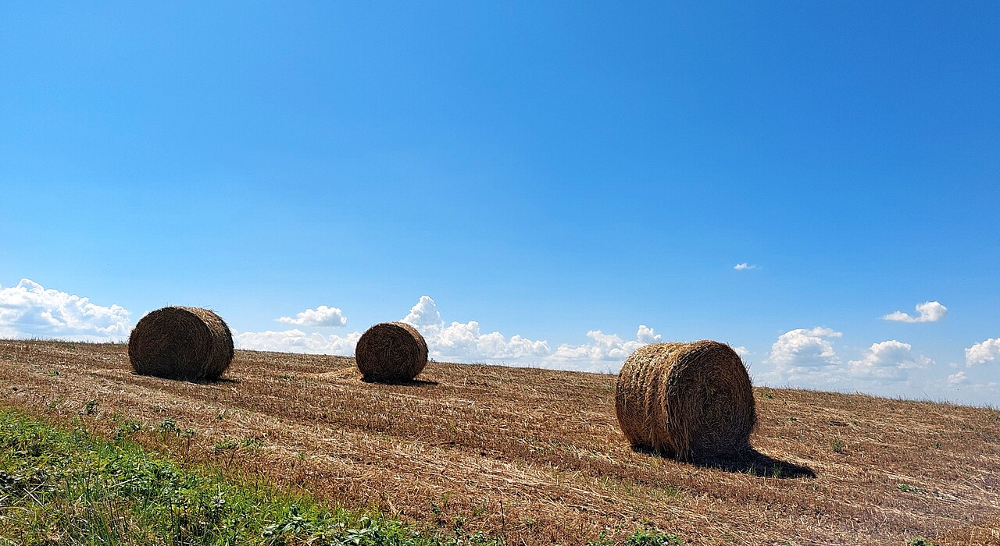
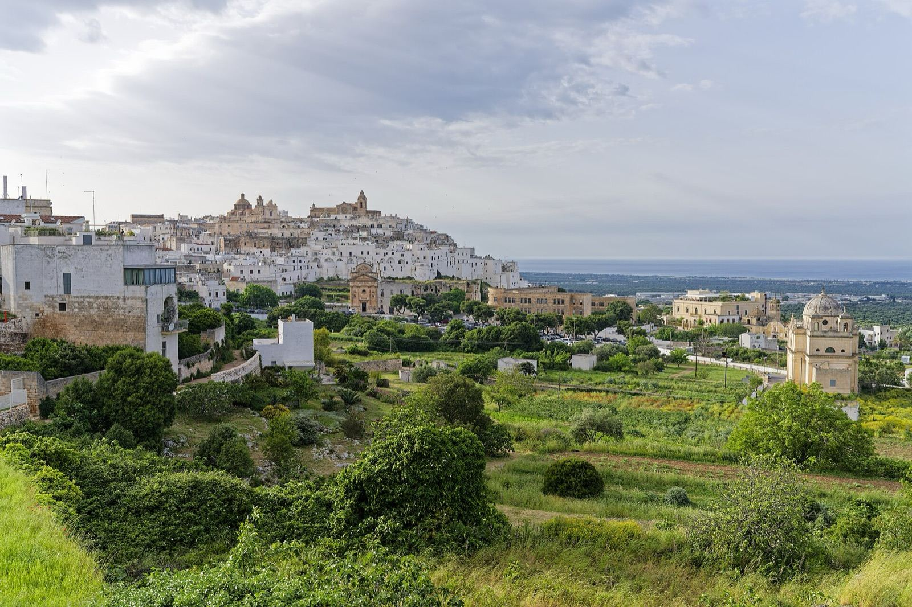
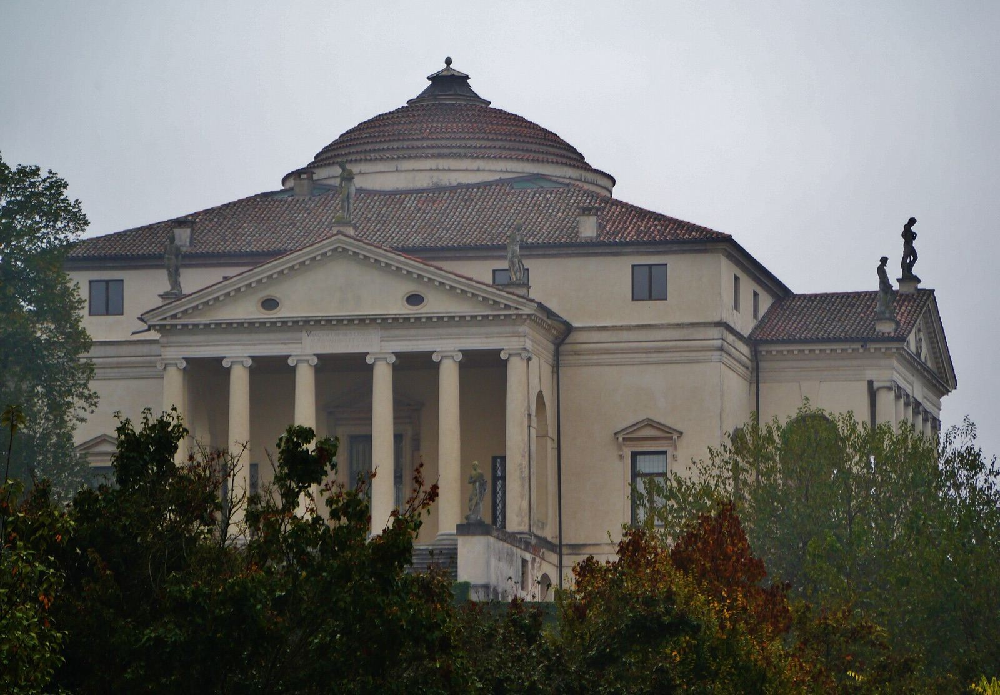
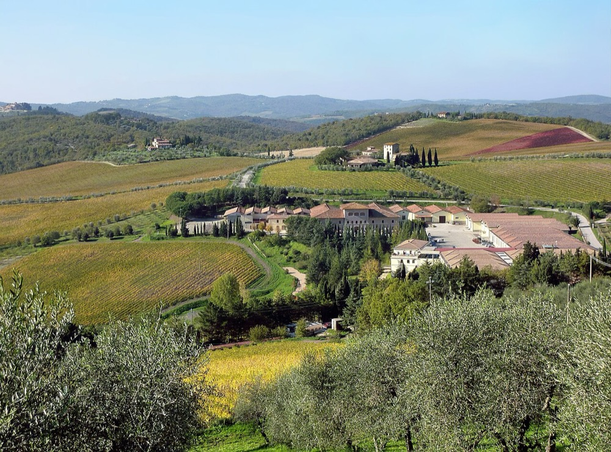
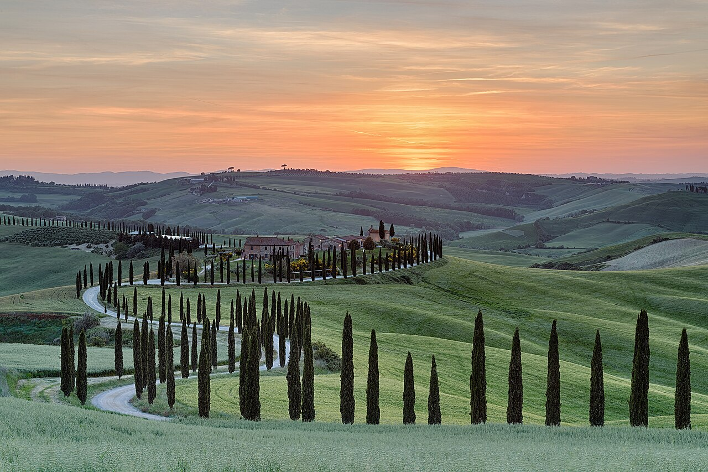
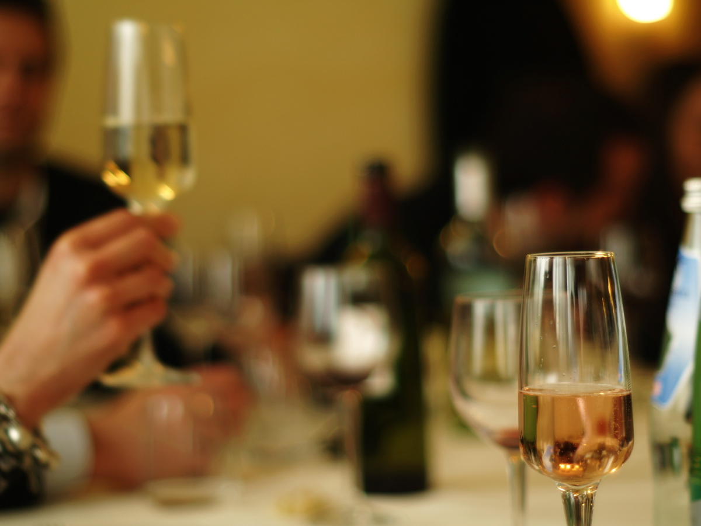

Йога и перезагрузка
Тоскана
Валь д’Орчия · 8–15 июня 2027
Утренние практики, вина Кьянти и день тишины на вилле у Сиены.
от €1490 Смотреть программуЙога на рассвете, вина Кьянти, трюфельный обед и ни одного лишнего будильника. Вилла у Сиены, всего 12 участников — и никто не смотрит на часы.
Тоскана — про тишину и йогу, Апулия — про кухню и землю, Венето — про архитектуру, историю и ремёсла. Сравните даты и выберите то, что откликается.

Валь д’Орчия · 8–15 июня 2027
Утренние практики, вина Кьянти и день тишины на вилле у Сиены.
от €1490 Смотреть программу
Долина Итрии · 12–19 сентября 2027
Орекьетте, буррата, оливковое масло и ужины в массерии.
от €1590* Смотреть ретрит
Виченца и Венеция · 3–10 октября 2027
Виллы Палладио, империя Венеции и ремесленные мастерские.
от €1690* Смотреть ретрит* Апулия и Венето — предварительные программы: цена и размещение фиксируются после подтверждения партнёров. Заявка ни к чему не обязывает.
Это не «тур по достопримечательностям» и не монастырское молчание. Мы снимаем виллу целиком на 12 человек: утро — йога и медленный завтрак, день — красоты и выезды по желанию, вечер — ужин и разговоры до камина. Всё под ключ, от трансфера до билета домой.
Йога и медитация каждое утро — по желанию. Выезды — тоже: в любой день можно остаться у бассейна, и никто не сделает вид, что вы подвели группу.
Трансфер из аэропортов Рима или Флоренции. Заселение, лёгкий ужин и первый закат над Вальд’Орчия.
включено: трансфер · ужинУтренняя йога, день в винодельческом сердце Тосканы: дегустация с сомелье, ужин от шефа на вилле.
включено: дегустация · ужинУтро в Сьене с нашим гидом, вечером — возвращение на виллу и свободный вечер.
включено: гид · обедНи автобусов, ни будильников: бассейн, спа-ритуалы на террасе, письмо себе длинным пером.
включено: спа на виллеСредневековые башни днём, обед с трюфелем у небольшой траттории — вечером.
включено: выезд · обедМастер-класс пасты и пекорино-сыра, финальный ужин у бассейна с живой гитарой.
включено: мастер-класс · ужинТихое утро, упаковка без спешки и обратный трансфер — с уже подписанной книгой рецептов.
включено: завтрак · трансферАтмосфера прошлых заездов и видео-отзывы участников. Отзывы этого заезда появятся здесь же — сразу после возвращения.


скоро
скороВилла, локации программы и атмосфера Тосканы.
«Приехала за йогой, а уехала с новым утром: завтрак на террасе без телефона — теперь норма, а не дедлайн».
«Первая в жизни неделя, когда я не держал в голове ни одной брони. ALEXtur реально всё закрыл: от трансфера до ужина с гитарой».
«"День тишины" скептически не работал две недели — потом переписываю его в дневник седьмой раз подряд».
Заполните форму — откроем WhatsApp с готовым сообщением, подтвердим место за день. Предоплата — 30%, остаток за 30 дней до заезда.
Да, обычный шенген. Оформим под ключ: анкета, запись в визовый центр, страховка — стандартная услуга ALEXtur.
Нулевой. Утренняя практика с двумя ведущими, параллельно идут мягкая и бодрая группы.
Да, 8 из 12 участников обычно едут по одному. Расселение — с другим участником того же пола или в одиночку за доплату.
Пропускайте. Всё, что «включено по программе», можно просто не делать — вилла, бассейн и тишина никуда не денутся.